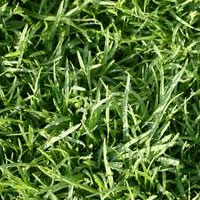

A selection of indoor sod options: reviewed and tested by
CosmoFarmer.com in our state-of-the-art "Apartment
Laboratory" on 5th Avenue.
Figure 1: Even the carpet-like
Carpetorium Pratensis requires mowing.

Figure 2: Creeping Bentgrass is best suited for outdoor use and
should be avoided by the indoor farmer.
Figure 3: This indoor-hybrid of Kentucky Bluegrass has fallen out of
fashion.
Figure 4: Tinea Pedis Poaceae threatens discomfort to bare
feet.
Figure 5: The difficult to maintain pattern of this indoor lawn is a
sight to behold.
Figure 6: The dandelion: scourge of the apartment farmer.